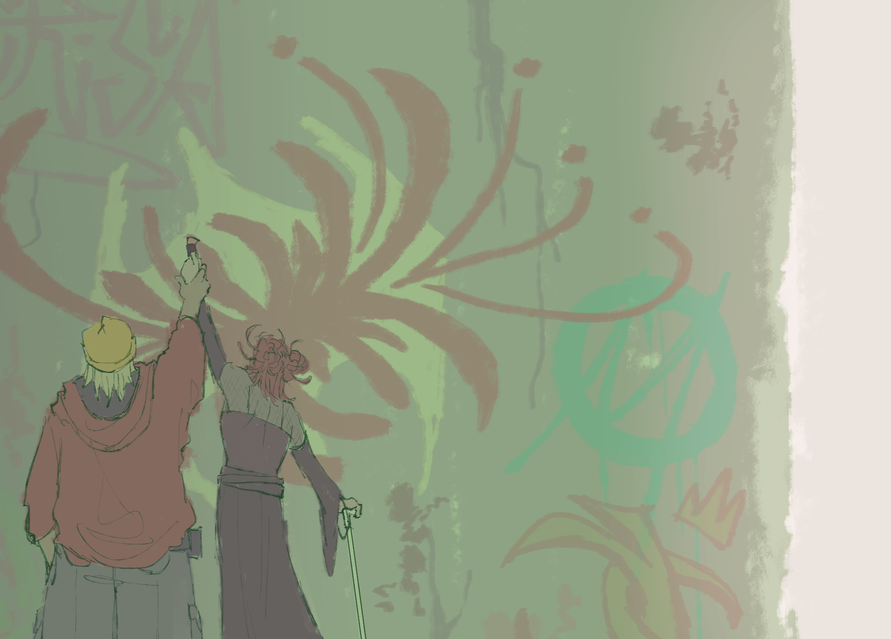
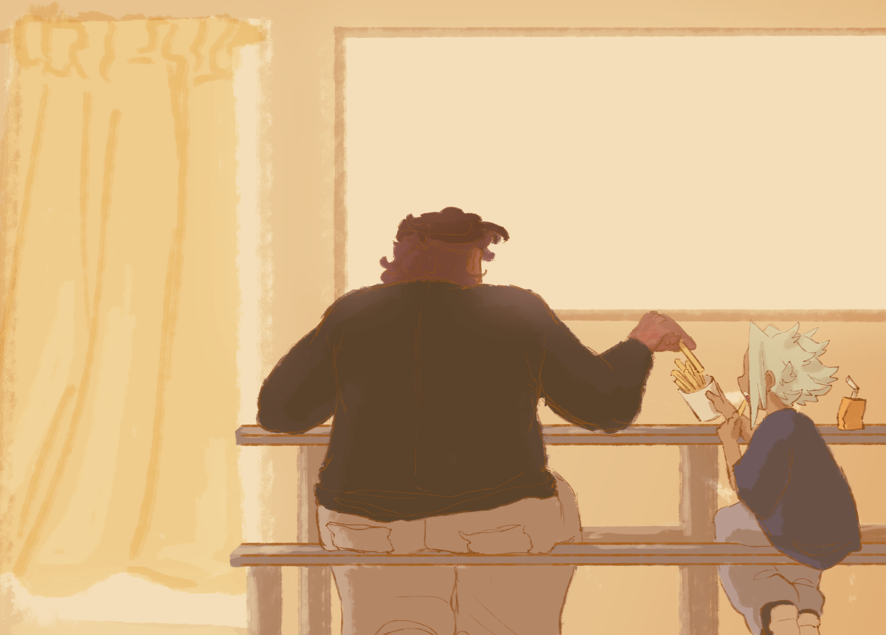
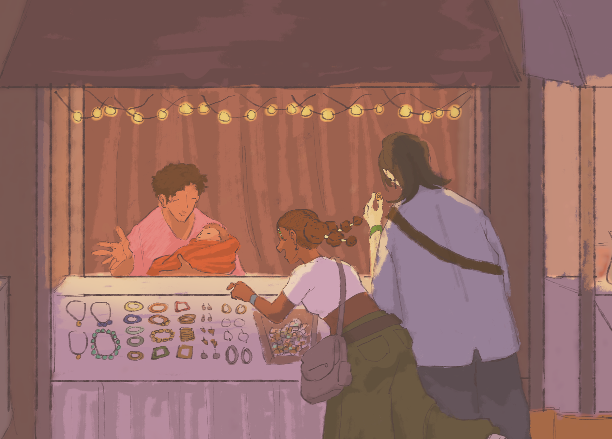
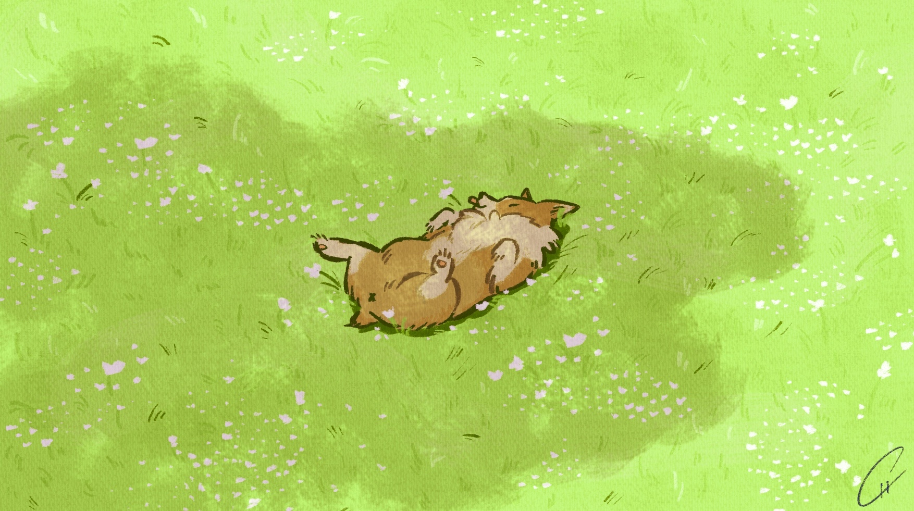

Digital Illustrations
These artworks are apart of the series, "Day Off". I wanted to capture the simple moments of letting the day go by with my characters. Throughout this series, we see a collection of characters going about their day, away from the camera to show the viewer that this is just another point in time, not very climatic or intense. Each piece is just the simple moment as the next.

This piece shows two characters painting on a wall, looking away from the viewer. It is to show their focus on the art, hiding away from the morning light.

This second piece are of two characters eating within the afternoon. I wanted take a glimpse into two characters sharing a moment, or in this case, sharing food together.

This last piece shows two character spending their time within a night market. I wanted to capture the energy of the market and characters all together, with the help of colors and implied movement.
This is an illustration inspired off of my artistic statement. This is based off of a simple day hanging out with my roomates and their dog. Such a fleeting moment, yet it gave my roomates and I, and their dog, a lot og joy.
